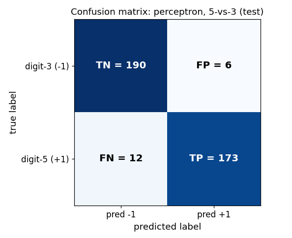

Chapter 38: scikit-learn: classification workflows
Everything in §§38.1–38.7 comes from the MLP Week-5 “Classification functions in sci-kit learn” slide deck (Dr. Ashish Tendulkar, IIT Madras) and the “Notes by Sejal” Week-5 summary; §§38.8–38.10 draw additionally on the Week-5 programming-questions solution notebook (the MNIST perceptron experiments). This is the code for Chapters 29–35’s equations: §31.8 derived \(h(x) = \sigma(\theta^T x + \theta_0)\) on paper; here something calls .fit() and returns it.
A word on what was actually run. sklearn is not installed on this machine (see the chapter task note), so no sklearn call below was executed here. The code blocks are transcribed from the course slides and notebooks — verbatim unless a slide typo forced a fix (each fix is logged in reviews/38-sklearn-classification.md). Every number beside the code is either [recorded] — printed as output in the course material itself — or [verified] — worked by hand in this session from the recorded confusion-matrix entries (accuracy/precision/recall/F1 are four arithmetic operations on those entries; nothing is invented). The two kinds are marked wherever they could be confused.
Notation. The book’s standing convention (chapters 31–36): \(X \in \mathbb{R}^{n \times d}\) holds the points \(x^{(1)}, \dots, x^{(n)}\) as rows. For classifiers the labels are discrete: \(y \in \{-1, +1\}^n\) (the §22.9 convention), \(\{0, 1\}^n\), or plain strings like 'apple'. sklearn accepts all three.
38.1 The classifier contract: fit, predict, decision_function, predict_proba, score
Def (classifier). A classifier = an estimator whose predict returns a label, not a number. It honors the same contract as §37.1’s regressors, with two additions:
fit(X_train, y_train)— learn the parameters from the training data. For logistic regression, this is §31.10’s job: minimize the cross-entropy.predict(X_test)— apply the learned parameters to new data: return a class label per row.decision_function(X)— the confidence score before the label is snapped on: for a linear classifier, the raw value \(w^T x + b\) (whose sign is the prediction — §22.9’s linear separator, un-snapped).predict_proba(X)— for classifiers that model probabilities (§31.8’s \(P(y=1 \mid x)\)): the probability of each class per row.score(X_test, y_test)— evaluate on held-out data. For classifiers this returns the mean accuracy (fraction correct — §22.9’s \(1 - L\)).
The slide lists these as the common methods “for model training, prediction and evaluation,” and adds the miscellaneous shelf: get_params / set_params (the §37.8 double-underscore addressing works here too), densify() / sparsify() (convert the coefficient matrix between dense and sparse formats).
The slide’s two-API split, which organizes the whole chapter:
| generic | specific |
|---|---|
SGDClassifier — gradient descent; you pick the loss |
LogisticRegression, Perceptron, RidgeClassifier (least-squares), KNeighborsClassifier, SVC, GaussianNB — specialized solvers |
Basically, … “Chapter 37’s regressors predicted numbers; classifiers predict labels. The machine is the same — fit learns, predict labels, score grades (accuracy now, not \(R^2\)). Two extras: decision_function shows the raw score behind the label, predict_proba shows the probability. And sklearn splits the shelf in two: one generic engine where you name the loss, and one-object-per-algorithm with a purpose-built solver.”
38.2 The zoo, as the course presents it
The slide names five specific classifier families; each is the code for one of the book’s math chapters:
from sklearn.neighbors import KNeighborsClassifier # §29.2's voters: the k nearest decide
from sklearn.tree import DecisionTreeClassifier # §29.9's recursive partitions
from sklearn.svm import SVC # ch32–33's max-margin machines
from sklearn.naive_bayes import GaussianNB # §30.7's counters: training is counting
from sklearn.ensemble import RandomForestClassifier, AdaBoostClassifier # ch34's committees(The class names are the standard sklearn API for the algorithms the slide lists; the slide itself codes only the linear family below — §§38.3–38.6 — which is where this chapter spends its pages.)
Note (the zoo’s shared contract). Every object above takes fit(X, y), answers predict(X), and reports score(X, y) as accuracy. Learn §§38.3–38.6 once and the pattern transfers: the math chapters (29–34) change what happens inside fit; the three verbs don’t move.
38.3 Least-squares classification: RidgeClassifier
§35.5’s idea as an estimator: least-squares classification (LSC) treats the labels as numbers and runs ridge regression on them.
The construction (the slide’s, kept whole). Binary classification: i) Convert binary targets to \(\{-1, +1\}\). ii) Treat it as a regression task, minimizing the penalized residual sum of squares \[\boxed{\min_w \; \lVert Xw - y\rVert_2^2 + \alpha\lVert w\rVert_2^2}\] — §28.3’s ridge objective, now with class labels in the \(y\) slot. iii) The predicted class is the sign of the regressor’s prediction — §22.9’s \(\mathrm{sign}(w^T x + b)\) again.
Multiclass: “treated as multi-output regression; predicted class corresponds to the output with the highest value.”
from sklearn.linear_model import RidgeClassifier
ridge_classifier = RidgeClassifier() # step 1: choose the estimator
ridge_classifier.fit(X_train, y_train) # step 2: learn, on train only
y_pred = ridge_classifier.predict(X_test) # labels, not numbersThe alpha dial (the slide’s): RidgeClassifier(alpha=0.001); default \(0.1\) per the slide; must be positive; larger \(\alpha\) = stronger regularization — the same dial as §37.7’s Ridge, and the same book-\(\lambda\) (§28.3) wearing the sklearn name.
Solvers (the slide’s list): svd (SVD of the feature matrix), cholesky (scipy.linalg.solve, closed form), sparse_cg (conjugate gradient; “for large scale data”), lsqr (“fastest”, regularized least-squares routine), sag/saga (“when both n_samples and n_features are large”; “fast convergence is only guaranteed on features with approximately the same scale” — §37.3’s scaling sermon, repeated), lbfgs. The default solver='auto' picks by data type (the slide’s pseudocode):
if solver == 'auto':
if return_intercept:
# only sag supports fitting intercept directly
solver = "sag"
elif not sparse.issparse(X):
solver = "cholesky"
else:
solver = "sparse_cg"Intercept: fit_intercept=True by default; if the data is already centered, set it False and no intercept is used. RidgeClassifierCV = the same estimator with built-in cross-validation (Chapter 39 owns the machinery; §37.7’s RidgeCV is its regression twin).
Basically, … “Take ridge regression (§28.3), feed it \(\pm 1\) labels instead of prices, and read the sign of the output as the class. That’s the whole classifier. alpha is the familiar regularization dial; the solver list is just different routes to the same closed form.”
38.4 The perceptron, as code
§31.2’s neuron, one import away:
from sklearn.linear_model import Perceptron
perceptron_classifier = Perceptron()
perceptron_classifier.fit(X_train, y_train)The identity that matters (the slide’s): Perceptron() shares its implementation with SGDClassifier, and
Perceptron()
# is
SGDClassifier(loss="perceptron", eta0=1, learning_rate="constant", penalty=None)The perceptron (§31.3’s “pay only for mistakes” loss) is one loss-setting of the generic engine — §38.6’s table makes this a pattern.
The knobs (the slide’s parameter list): penalty (default 'l2'), l1_ratio (default \(0.15\)), alpha (default \(10^{-4}\)), fit_intercept (default True), max_iter (default \(1000\)), tol (\(10^{-3}\)), n_iter_no_change (\(5\)), eta0 (\(1\)), validation_fraction (\(0.1\)), early_stopping (False), warm_start (re-initialize from the previous run’s weights), and partial_fit (train one epoch at a time — the course solution uses it to watch the bias evolve).
eg 1 (a real perceptron, on MNIST digits 6 vs 9) [recorded]. The course’s practice solution builds a binary task from MNIST: digit-6 = positive (\(+1\)), digit-9 = negative (\(-1\)), first \(10{,}000\) images for training. The training split holds \(1014\) sixes and \(978\) nines [recorded]; the labels are stacked (\(+1\)s then \(-1\)s) and shuffled with random_state=1729 [recorded]:
from sklearn.linear_model import Perceptron
clf = Perceptron(random_state=1729,
eta0=1, max_iter=10,
shuffle=False,
validation_fraction=0.1,
fit_intercept=True,
penalty=None,
warm_start=False)
clf.fit(x_train1, y_train1)
clf.coef_[0, 69] # the 70th feature's weight (0-based indexing) after 10 epochs
# 605.0 [recorded]clf.coef_ is §31.1’s weight vector, clf.intercept_ the bias — the same two attributes §37.4 read off a regressor. And the bias across epochs, via partial_fit [recorded]:
updates = []
for i in range(5):
clf.partial_fit(x_train1, y_train1, classes=np.unique(y_train1))
updates.append(clf.intercept_[0])
# [-1.0, -4.0, -4.0, -6.0, -5.0] [recorded]Each epoch nudges the bias by \(\pm \eta\) per mistake (§31.4’s update rule, with \(\eta = 1\)): the bias walks \(-1 \to -4 \to -4 \to -6 \to -5\) as the perceptron argues with the training rows.
Basically, … “The perceptron is one line of sklearn — and secretly one setting of the generic SGD engine. Its weights live in coef_ exactly where the regressor’s did. The course’s MNIST eg shows the bias literally walking, epoch by epoch, as mistakes get corrected.” ## 38.5 Logistic regression, as code
§31.8’s model — \(P(y=1 \mid x) = \sigma(\theta^T x + \theta_0)\) — as an estimator (“also known as logit regression, maximum-entropy classifier, log-linear classifier,” per the slide):
from sklearn.linear_model import LogisticRegression
logit_classifier = LogisticRegression()
logit_classifier.fit(X_train, y_train)The objective (the slide’s, kept verbatim in shape): the implementation minimizes \[\text{regularization penalty} \;+\; C \times \text{cross-entropy loss},\] i.e. \(\arg\min_{w}\; \text{penalty} + C \cdot L_{\mathrm{nll}}\) — and §31.9 proved that cross-entropy loss is the negative log-likelihood. So LogisticRegression.fit is §31.10’s training, outsourced to a solver.
The C dial — read this twice. sklearn’s logistic regression does not take alpha; it takes C, the inverse of the regularization rate: i) C multiplies the loss, not the penalty. Smaller \(C\) → the penalty dominates → stronger regularization; larger \(C\) → weaker. ii) In the book’s §28.3 convention (objective = loss \(+\) \(\lambda \cdot\) penalty), dividing the slide’s objective by \(C\) gives \(\text{loss} + \tfrac{1}{C}\cdot\text{penalty}\) — so \(\lambda = 1/C\), i.e. sklearn’s C = 1/alpha. §37.7’s ridge alpha is the book’s \(\lambda\); logistic regression’s C is its reciprocal. Same dial, flipped name tag.
Penalties and solvers (the slide’s table):
| solver | penalties supported |
|---|---|
'newton-cg' |
l2, none |
'lbfgs' |
l2, none |
'liblinear' |
l1, l2 |
'sag' |
l2, none |
'saga' |
elasticnet, l1, l2, none |
The slide’s selection rules: small datasets → 'liblinear'; large ones → 'sag'/'saga'; unscaled data → 'liblinear', 'lbfgs', 'newton-cg' are robust; multinomial loss (§31.12) needs 'newton-cg', 'sag', 'saga', or 'lbfgs' — 'liblinear' is one-vs-rest only. Default: solver='lbfgs', penalty='l2' (“regularization is applied by default because it improves numerical stability”).
Class imbalance (the slide’s note): class_weight in the constructor — “mistakes in a class are penalized by the class weight; higher value here would mean higher emphasis on the class.” Every classifier estimator in sklearn carries it:
LogisticRegression(class_weight={0: 1, 1: 10}) # a mistake on class 1 costs 10xLogisticRegressionCV = logistic regression with built-in cross-validation over C (and l1_ratio): cv picks the iterator, scoring the metric, Cs the candidate strengths. refit=True averages scores across folds, takes the winning C, and refits once; refit=False averages the coefficients, intercepts, and C themselves. (Chapter 39 gives CV its full treatment; the stratified iterators it needs are §38.9’s.)
Basically, … “Logistic regression in sklearn = §31.8’s sigmoid model + §31.9’s cross-entropy loss + a solver doing §31.10’s optimization. The one trap is the dial: it is called C, it multiplies the loss, and it is the reciprocal of the regularization strength — \(C = 1/\lambda = 1/\mathrm{alpha}\). Small \(C\), strong regularization. And class_weight is how you tell it that missing class 1 hurts ten times more.”
38.6 SGDClassifier: one engine, many classifiers
§37.3’s hill-walker, now for labels: “a simple yet very efficient approach to fitting linear classifiers under convex loss functions” — one sample at a time, model updated along the way with a decreasing learning rate. Same demands as its regression twin: shuffle the training data before fitting, standardize the features (sensitive to scaling — §37.3’s sermon applies verbatim).
The loss table (the slide’s — this is the whole API):
loss= |
classifier trained |
|---|---|
'hinge' (default) |
(soft-margin) linear SVM |
'log' |
logistic regression |
'modified_huber' |
smoothed hinge: outlier-tolerant, with probability estimates |
'squared_hinge' |
hinge, quadratically penalized |
'perceptron' |
the perceptron (§38.4) |
'squared_error', 'huber', 'epsilon_insensitive', 'squared_epsilon_insensitive' |
regression losses (the SGDRegressor shelf, §37.3) |
The slide’s equivalences, kept as stated:
SGDClassifier(loss='log') # == LogisticRegression(solver='sgd')
SGDClassifier(loss='hinge') # == linear support vector machineand multi-class comes free via one-vs-all (§38.7). (Note: real sklearn’s LogisticRegression has no solver='sgd' — the slide’s equivalence is in the loss and optimization sense: loss='log' trains the same logistic-regression objective by SGD. Write SGDClassifier(loss='log') in code.) It “easily scales up to more than \(10^5\) training examples and \(10^5\) features” and handles sparse input — text classification is the slide’s named use case.
from sklearn.linear_model import SGDClassifier
SGD_classifier = SGDClassifier(loss='log') # logistic regression, SGD-flavoured
SGD_classifier.fit(X_train, y_train)Regularization (the slide’s): penalty='l2' (default) / 'l1' / 'elasticnet' \(= (1 - \text{l1\_ratio})\cdot L2 + \text{l1\_ratio}\cdot L1\) (default l1_ratio=0.15); alpha multiplies the penalty term (default \(10^{-4}\) — §37.7’s dial, same name here). max_iter = epochs (default \(1000\)). The shared knobs with SGDRegressor (§37.3): learning_rate ('constant'/'optimal'/'invscaling'/'adaptive'), tol, n_iter_no_change, early_stopping, validation_fraction, average (averaged SGD), warm_start.
Basically, … “SGDClassifier is the Swiss-army engine: name a loss, get a classifier. loss='log' is logistic regression, 'hinge' is a linear SVM, 'perceptron' is §38.4’s perceptron — three chapters of math (31, 33, 35) behind one constructor argument. Price of admission: shuffle, scale, and set the knobs §37.3 taught.”
38.7 Multiclass, multilabel, multioutput
The three setups (the slide’s definitions): i) Multiclass: exactly one label per example, more than two classes (iris: setosa/versicolor/virginica; MNIST: ten digits). ii) Multilabel: more than one output, each binary (an article tagged {sports, politics}). iii) Multiclass-multioutput: more than one output, each with \(> 2\) values. The slide calls all three “multi-learning problems.”
What shape is y? Ask type_of_target (the slide’s diagnostic):
from sklearn.utils.multiclass import type_of_target
type_of_target(y)[recorded] examples from the slide: type_of_target([1, 0, 2]) → 'multiclass'; type_of_target([1.0, 0.0, 3.0]) → 'multiclass'; type_of_target(['a', 'b', 'c']) → 'multiclass'; type_of_target(np.array([[1, 2], [3, 1]])) → 'multiclass-multioutput'; type_of_target(np.array([[0, 1], [1, 1]])) → 'multilabel-indicator'; type_of_target([[1, 2]]) → 'multilabel-indicator'. (Plus 'continuous'/'continuous-multioutput' for regression and 'binary' for two-class.)
Representing labels — LabelBinarizer turns a label vector into the \((n, k)\) indicator matrix [recorded]:
from sklearn.preprocessing import LabelBinarizer
y = np.array(['apple', 'pear', 'apple', 'orange'])
y_dense = LabelBinarizer().fit_transform(y)
# [[1 0 0]
# [0 0 1]
# [1 0 0]
# [0 1 0]]Meta-estimators: wrappers that “transform the multi-learning problem into a set of simpler problems and fit one estimator per problem”: i) OneVsRestClassifier — one classifier per class, \(c\)-vs-rest; \(k\) classifiers; “computationally efficient,” “interpretable”; also handles multilabel (labels as an \((n, k)\) indicator matrix). ii) OneVsOneClassifier — one classifier per pair of classes: \(\binom{k}{2} = k(k-1)/2\) classifiers; predicts the class with the most votes, ties broken by aggregate confidence; “processes subset of data at a time,” useful when the base classifier “does not scale with the data.”
from sklearn.multiclass import OneVsRestClassifier, OneVsOneClassifier
from sklearn.svm import LinearSVC
OneVsRestClassifier(LinearSVC(random_state=0)).fit(X, y)
OneVsOneClassifier(LinearSVC(random_state=0)).fit(X, y)MultiOutputClassifier— one classifier per target (multi-output/multi-label).ClassifierChain— chains binary classifiers so each sees the previous targets’ predictions: “capable of exploiting correlations among targets” (the slide’s contrast:MultiOutputClassifierfits independent targets; the chain lets targets talk to each other).
Built-in support (the slide’s table): many estimators need no wrapper — inherently multiclass: LogisticRegression(multi_class='multinomial'), LogisticRegressionCV(multi_class='multinomial'), RidgeClassifier, RidgeClassifierCV; multiclass-as-OVR: LogisticRegression(multi_class='ovr'), SGDClassifier, Perceptron; multilabel: RidgeClassifier, RidgeClassifierCV. The slide’s advice: “All classifiers in scikit-learn perform multiclass classification out-of-the-box. Use sklearn.multiclass only when you want to experiment with different multiclass strategies.”
Basically, … “One label of many (multiclass), many yes/no labels (multilabel), many multi-valued labels (multioutput) — three shapes, checked with type_of_target. Most classifiers already handle multiclass internally (logistic regression even does proper multinomial, §31.12). The meta-estimators are the DIY kit: OVR trains \(k\) ‘this-vs-everything’ classifiers, OVO trains \(k(k-1)/2\) pairwise duels and takes the vote.” ## 38.8 Evaluation: the confusion matrix, and what it implies
§22.9’s 0/1 loss counts mistakes; the confusion matrix sorts them. For binary labels with \(+1\) the positive class:
Def (confusion matrix). confusion_matrix(y_true, y_pred) returns the \(2 \times 2\) table whose entry \((i, j)\) = “number of observations actually in group \(i\) but predicted to be in group \(j\)” (the slide’s definition — rows are the truth):
| pred \(+1\) | pred \(-1\) | |
|---|---|---|
| true \(+1\) | TP (true positive) | FN (false negative) |
| true \(-1\) | FP (false positive) | TN (true negative) |
From these four counts, everything follows (standard definitions, used exactly as the course’s code uses them): \[\boxed{\text{accuracy} = \frac{TP + TN}{TP+TN+FP+FN}}, \qquad
\boxed{\text{precision} = \frac{TP}{TP + FP}}, \qquad
\boxed{\text{recall} = \frac{TP}{TP + FN}}, \qquad
\boxed{F_1 = \frac{2 \cdot \text{precision} \cdot \text{recall}}{\text{precision} + \text{recall}}}.\] Accuracy = $1 - $ §22.9’s 0/1 loss. Precision = “of everything I called positive, how many truly were” (purity of the alarms). Recall = “of everything truly positive, how many did I catch” (completeness of the net). \(F_1\) is their harmonic mean — it punishes a classifier that games one at the expense of the other. The slide’s metrics shelf: accuracy_score, balanced_accuracy_score, top_k_accuracy_score, precision_score, recall_score, f1_score, roc_auc_score.
eg 2 (the course’s digit-5 vs digit-3 perceptron, graded) [recorded entries, arithmetic verified]. The graded solution trains the §38.4-style perceptron (random_state=42, max_iter=100, shuffle=True, no penalty) on MNIST 5-vs-3 (train: \(863\) fives, \(1032\) threes [recorded]) and reports this test confusion matrix [recorded]:

Read the four cells: \(TN = 190\), \(FP = 6\), \(FN = 12\), \(TP = 173\) (positive = digit-5, label \(+1\) — sklearn’s default pos_label). Then: \[\text{accuracy} = \frac{173 + 190}{381} = \frac{363}{381} \approx \boxed{0.9528},\] \[\text{precision} = \frac{173}{173 + 6} = \frac{173}{179} \approx \boxed{0.9665}, \qquad
\text{recall} = \frac{173}{173 + 12} = \frac{173}{185} \approx \boxed{0.9351},\] \[F_1 = \frac{2 \times 0.9665 \times 0.9351}{0.9665 + 0.9351} \approx \boxed{0.9505}.\] The accuracy/precision/recall match the notebook’s printed 0.952755905511811, 0.9664804469273743, 0.9351351351351351 [recorded] to every shown digit — the arithmetic is the definition, no magic.
Note (a wrinkle in the course’s own answer keys). The PDF’s answer keys for two graded questions read \(FN = 6\), \(FP = 12\) — transposed against the confusion matrix above and against the notebook’s own printed precision/recall (which use sklearn’s pos_label=1 convention: \(FP = 6\), \(FN = 12\)). The chapter follows the matrix and the printed metric values; the discrepancy is logged in the review.
The display machinery (the slide’s): ConfusionMatrixDisplay(confusion_matrix=cm, display_labels=clf.classes_), ConfusionMatrixDisplay.from_estimator(clf, X_test, y_test), ConfusionMatrixDisplay.from_predictions(y_test, y_pred) — the figure above is that third form’s content. And classification_report(y_true, y_pred) prints per-class precision/recall/F1 in one text block.
Basically, … “The confusion matrix is the mistake ledger: rows = truth, columns = verdict. \(TP\)/\(TN\) are the agreements, \(FP\)/\(FN\) the two kinds of disagreement. Accuracy counts agreements; precision asks ‘were my positive calls right?’; recall asks ‘did I find all the positives?’; \(F_1\) keeps the two honest with each other. The course’s own perceptron gets 95% accuracy — and the matrix shows you where the other 5% went.”
38.9 Thresholds, imbalance, and multiclass metrics
A probabilistic classifier (§31.8) doesn’t have to snap at \(0.5\). predict_proba gives \(P(y=1 \mid x)\); choosing the threshold that converts it to a label is a decision, not a law:
- Lower the threshold → more predicted positives → recall rises, precision usually falls.
- Raise the threshold → fewer, surer positive calls → precision rises, recall falls.
The slide’s tools for watching the trade-off move:
from sklearn.metrics import precision_recall_curve, roc_curve
precision, recall, thresholds = precision_recall_curve(y_true, y_predicted)
fpr, tpr, thresholds = roc_curve(y_true, y_scores, pos_label=2)precision_recall_curve sweeps the threshold and records precision/recall at each; roc_curve sweeps it and records the false-positive rate vs the true-positive rate (recall) — the ROC curve, whose area is roc_auc_score (§30.11’s closing list names AUC the same way).
Class imbalance, two levers (both course-sourced): i) class_weight (§38.5): penalize mistakes on the rare class more, at training time. ii) The threshold (§38.9): move the decision boundary at prediction time — free, no retraining.
One binary metric, \(k\) classes (the slide’s average= table): treat the problem as \(k\) one-vs-rest binaries, then average: - macro: plain mean of the per-class scores (every class equal, rare or not). - weighted: mean weighted by each class’s presence in the true data (frequent classes count more). - micro: every sample-class pair contributes equally (big classes dominate). - samples: average the metric over samples (multilabel). - None: no averaging — return the per-class array.
Basically, … “Accuracy is one number; the threshold is a dial you turn after training. Lower it and you catch more positives but cry wolf more; raise it and your alarms get trustworthy but sparse. precision_recall_curve draws that trade-off so you can pick your point. And when there are \(k\) classes, average= decides whether rare classes get an equal vote (macro) or a proportional one (weighted).”
38.10 The full classification pipeline: three course experiments
This section replays §37.8’s pipeline discipline on classifiers, using the course’s own experiments — including two places where the course’s first attempt teaches the lesson by failing.
The setup (both course-sourced). The graded MNIST 5-vs-3 data (\(x_{\text{train}1}\) has shape \((1895, 784)\) [recorded]), and the §38.4 perceptron with shuffle=True.
Experiment A — shuffle matters (or: SGD on sorted data). Same perceptron, two shuffles [recorded]:
| accuracy | precision | recall | |
|---|---|---|---|
shuffle=True |
\(0.9528\) | \(0.9665\) | \(0.9351\) |
shuffle=False |
\(0.5486\) | \(1.0000\) | \(0.0703\) |
With shuffle=False the confusion matrix is \((TN, FP, FN, TP) = (196, 0, 172, 13)\) [recorded]: the perceptron predicts \(-1\) for nearly everything — perfect precision (its 13 positive calls were all right) and catastrophic recall (it found 13 of 185 fives). Why: the training rows were stacked \(+1\)s-then-\(-1\)s (§38.4), and SGD (§38.6) “estimates the gradient with one sample at a time” — fed 863 fives first, it walks deep into five-territory, then 1032 threes drag it back and it never recovers. The slide’s rule — “it is important to permute (shuffle) the training data before fitting” — is not hygiene, it is load-bearing. (The course’s Q6 answer, options 3/5/7 [recorded]: with shuffling off, accuracy decreased, precision increased, recall decreased.)
Experiment B — the leak the course committed, then fixed. To reduce \(784\) pixels to \(10\), the solution’s first attempt was:
x_train1_reduced = pca.fit(x_train1).transform(x_train1)
x_test1_reduced = pca.fit(x_test1).transform(x_test1) # fit AGAIN, on the test setTwo violations in two lines: fitting on the test set learns the projection from test statistics (§37.8’s Note — the same leak as fit_transform before the split), and worse, train and test get different projection bases. Result: confusion matrix \((119, 77, 92, 93)\) [recorded], accuracy \(0.5564\), precision \(0.5471\), recall \(0.5027\) [recorded] — barely above coin-flip. The corrected version fits once, on train only:
p = pca.fit(x_train1)
x_train1_reduced = p.transform(x_train1)
x_test1_reduced = p.transform(x_test1)and the structural fix is the pipeline — fit learns every step on train, predict only transforms (§37.8):
from sklearn.decomposition import PCA
from sklearn.pipeline import make_pipeline
pca = PCA(n_components=10, random_state=1)
clf = Perceptron(random_state=42, eta0=1, max_iter=100,
shuffle=True, validation_fraction=0.1,
fit_intercept=True, penalty=None, warm_start=False)
pipe = make_pipeline(pca, clf, verbose=1)
pipe.fit(x_train1, y_train1)
y_pred1 = pipe.predict(x_test1)The corrected run’s confusion matrix: \((TN, FP, FN, TP) = (175, 21, 9, 176)\) [recorded] — accuracy \(351/381 \approx \boxed{0.9213}\), precision \(176/197 \approx \boxed{0.8934}\), recall \(176/185 \approx \boxed{0.9514}\) [verified]. Ten PCA components keep 92% accuracy; the leak had thrown away 36 points of it.
Experiment C — does regularization help here? Same correct-PCA setup, perceptron with penalty='l2', alpha=0.01 [recorded]: accuracy \(0.7480\), precision \(0.7543\), recall \(0.7135\) [recorded] — from \((TN, FP, FN, TP) = (153, 43, 53, 132)\) [verified]. With penalty='l1', alpha=0.01 [recorded]: accuracy \(0.8688\), precision \(0.8689\), recall \(0.8595\) [recorded] — from \((172, 24, 26, 159)\) [verified]. Against the unregularized \(0.9213\): L2 hurts, L1 hurts less but still hurts (the course’s Q9 answer: no [recorded]). L1 beats L2 here (\(0.8688 > 0.7480\) [verified]) — on \(10\) dense PCA components there is nothing to sparsify away, so the penalty is pure drag; §28.9’s trade-off cuts both ways.
Basically, … “Three experiments, three morals the course learned the hard way: (1) shuffle before SGD, or the perceptron memorizes the order of your data; (2) pca.fit on the test set is the leak §37.8 warned about — fit once on train, or let a pipeline make the leak un-writable; (3) regularization is not fairy dust — on already-compressed features it cost 5–17 points of accuracy. Every one of these numbers is the course’s own output.”
38.11 Where this goes next
- Evaluation doctrine, properly. Chapter 39 takes §38.9’s sketch — the stratified iterators the slide names (
StratifiedKFold,RepeatedStratifiedKFold,StratifiedShuffleSplit: folds that replicate the overall class distribution, because plain folds can starve a class),LogisticRegressionCV’srefitsemantics, and the full grid/randomized search — and makes it a subject. - Debugging the workflow. Chapter 40: when
scoreprints \(0.55\) and the pipeline looks right, the discipline for finding out why — Experiment A’s shuffle disaster is the canonical first suspect. - The neural turn. The perceptron of §38.4 is Chapter 41’s neuron with a sign snapped on top;
MLPClassifierwill honor the samefit/predictcontract with a hidden layer inside. The contract outlives linear models — again.
Problem set
- The contract. (i) In one line each, say what
fit,predict,decision_function, andscorecompute for a classifier, in the book’s notation (\(w, b\); \(\mathrm{sign}(w^T x + b)\); §22.9’s loss). (ii) Which of these does a regressor’sscorenot return, and what does it return instead (§37.5)? (iii)predict_probaexists forLogisticRegressionbut is meaningless forRidgeClassifier— why, from §38.3’s construction? - Confusion matrix by hand. A test set gives \(TP = 40\), \(TN = 50\), \(FP = 10\), \(FN = 20\). (i) Compute accuracy, precision, recall, \(F_1\). (ii) A colleague reports “accuracy \(75\%\), so the model is fine” — the positive class is a rare disease. Using precision and recall, argue in two lines why accuracy alone misleads here.
- The
Ctranslation. The slide’s logistic-regression objective is \(\text{penalty} + C \cdot \text{cross-entropy loss}\). (i) Divide through by \(C\) and match against the book’s §28.3 form \(\text{loss} + \lambda \cdot \text{penalty}\) to show \(\lambda = 1/C\). (ii) Explain in one line why smaller \(C\) means stronger regularization. (iii) §37.7 says ridge’salphais the book’s \(\lambda\) — so what isLogisticRegression(C=...)’sCin terms of thatalpha? - Course-sourced. The slide’s
LabelBinarizerexample transforms['apple', 'pear', 'apple', 'orange']. (i) Write the \((4, 3)\) indicator matrix by hand and check it against the recorded output. (ii) Why does the slide say the result has shape \((n, k)\) — what are \(n\) and \(k\) here? - Threshold moving.
precision, recall, thresholds = precision_recall_curve(y_true, y_predicted)(the slide’s call). (i) As you walk the thresholds array from high to low, what happens to the number of predicted positives, and hence to recall? (ii) A spam filter must almost never flag a legitimate email, but may let some spam through. Should its threshold go up or down from \(0.5\), and which metric is being protected? - Spot the leak. The course solution’s first PCA attempt (Experiment B) ran
pca.fit(x_train1)andpca.fit(x_test1). (i) Name the discipline this violates (§37.8’s Note / §36.7) and say exactly what leaks where — and what else breaks beyond the leak. (ii) Rewrite the two lines so the leak is structurally impossible (onefit, or a pipeline). - OVR vs OVO. (i) For \(k = 5\) classes, how many binary classifiers do
OneVsRestClassifierandOneVsOneClassifiertrain? (ii) The slide says OVO “processes subset of data at a time and is useful in cases where the classifier does not scale with the data” — explain in one line why training on subsets helps an unscalable base estimator. - Diagnose the fit. A perceptron reports test accuracy \(0.5486\), precision \(1.0\), recall \(0.0703\) (Experiment A’s numbers). (i) Reconstruct the approximate confusion matrix counts from these three numbers plus \(n = 381\) (positive class = \(185\) rows). (ii) Diagnose in §38.6’s vocabulary: what single constructor argument most likely caused this, and why does it interact with how the course stacked the training rows?
Solutions
Attempt each problem first, then click a problem to reveal its worked solution.
fit(X_train, y_train)learns \((w, b)\) from the training rows (e.g. the perceptron’s mistake-driven updates, §31.4; logistic regression’s cross-entropy minimization, §31.10).predict(X_test)returns one label per row: \(\hat y = \mathrm{sign}(w^T x + b)\) for the linear family (§22.9).decision_function(X_test)returns the un-snapped score \(w^T x + b\) per row — the confidence behind the sign.score(X_test, y_test)returns the mean accuracy, i.e. \(1 - L\) with \(L\) = §22.9’s 0/1 loss.A regressor’s
scoredoes not return accuracy; it returns \(R^2 = 1 - u/v\) (§37.5) — “what fraction of the label’s variance the model explains.”RidgeClassifiernever models \(P(y \mid x)\): §38.3’s construction converts labels to \(\{-1,+1\}\) and runs regression; its output is a real number whose sign is read as the class. There is no probability to report —predict_probawould be a fiction.LogisticRegressiongenuinely fits §31.8’s \(P(y=1 \mid x) = \sigma(\theta^T x + \theta_0)\), so its probabilities are the model itself.
\(n = 40 + 50 + 10 + 20 = 120\). \[\text{accuracy} = \frac{40 + 50}{120} = \frac{90}{120} = \boxed{0.75}, \qquad \text{precision} = \frac{40}{40 + 10} = \frac{40}{50} = \boxed{0.80},\] \[\text{recall} = \frac{40}{40 + 20} = \frac{40}{60} \approx \boxed{0.6667}, \qquad F_1 = \frac{2 \times 0.8 \times 0.6667}{0.8 + 0.6667} = \frac{1.0667}{1.4667} \approx \boxed{0.7273}.\]
The disease is rare, so \(TN = 50\) dominates the accuracy numerator — a classifier that calls nearly everyone healthy still scores well. Recall \(0.67\) says a third of the sick are missed (the costly error); precision \(0.80\) says one in five alarms is false. Accuracy hides both behind the healthy majority.
C translation
Slide: minimize \(\text{penalty} + C \cdot \text{loss}\) over \(w\). Divide the whole objective by the positive constant \(C\) (scaling an objective doesn’t move its minimizer): \[\frac{1}{C}\,\text{penalty} + \text{loss} \quad\Longleftrightarrow\quad \text{loss} + \frac{1}{C}\,\text{penalty}.\] Matching against the book’s §28.3 form \(\text{loss} + \lambda \cdot \text{penalty}\) gives \(\boxed{\lambda = 1/C}\).
\(C\) multiplies the loss: shrinking \(C\) shrinks the loss term’s weight, so the penalty term dominates the trade-off — the optimizer prefers smaller weights, i.e. stronger regularization.
§37.7’s ridge
alphais the book’s \(\lambda\), so for the identical regularization strength: \(\boxed{C = 1/\mathrm{alpha}}\) (with the caveat that the two estimators’ objectives normalize the loss differently — logistic regression averages nothing out front the way the book’s \(J\) does — so treat the reciprocal as the dial’s direction and scale, exact only up to that normalization).
LabelBinarizer)
Classes sorted: apple, orange, pear (\(k = 3\)). One-hot per row: \[\begin{bmatrix} 1 & 0 & 0 \\ 0 & 0 & 1 \\ 1 & 0 & 0 \\ 0 & 1 & 0 \end{bmatrix}\]
'apple'→ column 0,'pear'→ column 2,'orange'→ column 1. This matches the recorded output[[1 0 0] [0 0 1] [1 0 0] [0 1 0]]exactly.\(n = 4\) examples (rows), \(k = 3\) distinct classes (columns) — one column per class, one row per example.
Lowering the threshold can only flip predictions from negative to positive, never the reverse — so the predicted-positive count is non-decreasing, \(TP\) is non-decreasing while the positive pool (\(TP + FN\)) is fixed, and \(\text{recall} = TP/(TP+FN)\) is non-decreasing. (Precision typically falls: the extra positives are the model’s least confident calls.)
Threshold up from \(0.5\): fewer positive (“spam”) calls, each surer. Protected metric: precision of the spam verdict — “of the emails I flagged, (almost) all were truly spam.” (The cost — missed spam, lower recall — is explicitly accepted.)
The violated discipline is §37.8’s Note (and §36.7’s imputation rule): fit on train, transform everywhere.
pca.fit(x_test1)learns the projection’s mean and principal directions from the test rows — test statistics leak into the fitted transformer. Beyond the leak, something worse breaks: train and test are projected onto different bases (two independent PCAs), so the classifier trains in one coordinate system and is tested in another — the \(0.5564\) accuracy is the wreckage.One fit, on train only:
p = pca.fit(x_train1)
x_train1_reduced = p.transform(x_train1)
x_test1_reduced = p.transform(x_test1)or structurally leak-proof:
pipe = make_pipeline(PCA(n_components=10, random_state=1), clf)
pipe.fit(x_train1, y_train1) # every step learns from train only
pipe.predict(x_test1) # test rows only ever see transform\(k = 5\):
OneVsRestClassifiertrains \(\boxed{5}\) classifiers (one per class, \(c\)-vs-rest).OneVsOneClassifiertrains \(\binom{5}{2} = \frac{5 \times 4}{2} = \boxed{10}\) classifiers (one per pair).Each OVO duel trains on only the two classes’ rows — roughly \(2/k\) of the data per classifier — so a base estimator whose training cost blows up with \(n\) (the slide’s “does not scale with the data”) sees small, cheap subproblems instead of one big one. (OVR’s \(k\) classifiers each still see all \(n\) rows.)
Positive rows: \(TP + FN = 185\). Recall \(= TP/185 = 0.0703\) → \(TP \approx 0.0703 \times 185 = 13\), \(FN = 172\). Precision \(= TP/(TP+FP) = 1.0\) → \(FP = 0\). Accuracy \(= (TP+TN)/381 = 0.5486\) → \(TN = 0.5486 \times 381 - 13 = 209 - 13 = 196\). So \((TN, FP, FN, TP) = (196, 0, 172, 13)\) — exactly §38.10’s recorded matrix.
The suspect is
shuffle=False. The course stacked the training matrix as all \(+1\)s then all \(-1\)s; with shuffling off, SGD (§38.6: “the gradient of the loss is estimated with one sample at a time”) sees 863 fives first and walks far into positive territory, then 1032 threes drag the weights back — the final model sits in negative territory and predicts \(-1\) almost everywhere (\(FN = 172\)). Shuffling (shuffle=True) interleaves the classes so no single class dominates any stretch of the walk — the slide’s “it is important to permute (shuffle) the training data before fitting.”